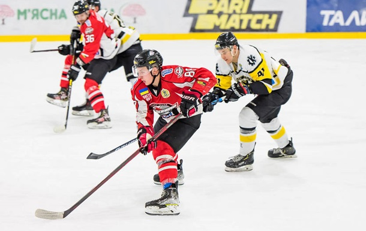

Хоке́й (го́кей англ. hockey, та діал. гакі́вка)[1] — спільна назва для командних спортивних ігор із ключкою, мета яких закинути м'яч або шайбу в ворота протилежної команди.Перша згадка слова hockey належить до 1773 року — у книжці «Юнацькі види спорту і часопроводження: з доданням спогадів автора і включаючи опис нової системи виховання дітей» (Juvenile Sports and Pastimes, to Which Are Prefixed, Memoirs of the Author: Including a New Mode of Infant Education) написаній Річардом Джонсоном (псевдонім — Master Michel Angelo, «Майстер Мікеланджело»). Розділ №XI називався «Удосконалення гри у хокей» (New Improvements on the Game of Hockey)[2]. Походження слова неясне. За одною з версій, воно є похідним від старофр. hoquet («ковінька», «ґирлиґа»). Інша версія пов'язує hockey зі словом hocky — так здогадно звалися коркові чопи, які заміняли у XVIII ст. дерев'яні кулі для гри. Такі корки ніби використовували для бочок з рейнвейном (англ. hock), від чого і пішла їхня назва[2]. Перші повідомлення про хокей із шайбою українською мовою вийшли 1904 року у Львові, тоді спорт називали гокей або діал. гакі́вка[3][1]. У 1909 Медард Кавецький прочитав у Львові лекцію «Хокей на леді». 1910 року побачили світ перші правила хокею з шайбою українською, які уклав Іван Боберський під назвою «Правила до гаківки»[4]. Слово «гаківка» могло з'явитися за співзвучністю з оригінальною вимовою слова hockey («га́кі») і подальшою контамінацією з «гак»[5]. Ігор Мельник[6], також низка авторів публікацій у ЗМІ називає винахідником цього слова Івана Боберського — одного із засновників організації «Пласт»[5][7], Т. Береза, І. Зубрицька, Ю. Зелений уважали, що це слово з'явилося в українській мові завдяки його копіткій роботі[8]. Назва «гаківка» широко вживалася у спортивній термінології Галичини в 1920—1930-х роках, але пізніше витіснена назвами «хокей»/«гокей»[9]. Сучасні мовознавці вважають назву «гаківка» застарілою[10][11], але думки щодо доцільності її повернення до вжитку різняться. К. ф. н. Зоряна Мацюк і Ніна Станкевич відносять «гаківку» до українських відповідників до запозичених слів-термінів, що засвідчують багатство українського мовного генофонду та мають характер української «знадібки»[12]. Натомість д. ф. н. Олександр Стишов вважає «гаківку» небажаним пуризмом та відносить до негативної тенденції заміни апробованих та узвичаєних інтернаціоналізмів, які стали органічними складниками української мови, на застарілі, рідковживані та вузькорегіональні слова; він поділяє думку д. ф. н. Лідії Лисиченко, що вживання цього слова сприяє процесу деестетизації сучасної української мови[13].
